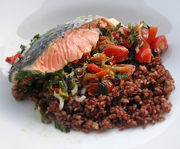

Lachs Mexican
5,5 von 6Frühlingszwiebeln, einige frische Chilischoten, ca. 15 Cherry-Tomaten, ein Bund Koriander - alles klein schneiden und mit Olivenöl und Saft von 2 Limetten vermengen. Mit Salz und Pfeffer abschmecken. Die erste Lachstranche (mit Haut nach unten) auf einer Alufolie in eine ofenfeste Form geben. Die Gemüsemasse auf dem Fisch verteilen. Mit der zweiten Lachstranche (Haut nach oben) bedecken und der Alufolie schliessen. Bei ca. 200 Grad 25 Minuten im Ofen garen. Mit Reis (z.B. Wildreis) servieren.
